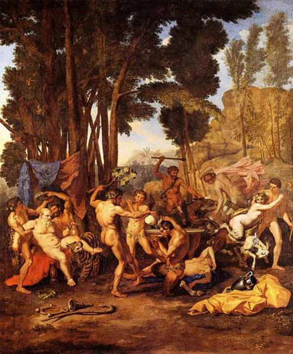
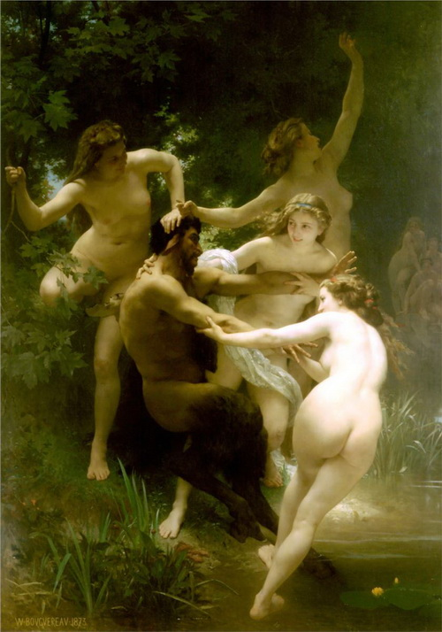

Thần Dionysos lãnh sứ mạng truyền dạy cho mọi người biết nghề trồng nho và nghề ép rượu. Cùng với một đoàn các vị thần tùy tùng đông đảo, Dionysos đi tới đâu là gieo rắc sự vui tươi, hoan lạc, cuồng nhiệt ở nơi đó. Các nữ thần Bacchantes quấn trên người một tấm da sư tử, ngực để trần, tay cầm gậy thyrse, một cây gậy dài như một ngọn lao có một dây nho quấn trên thân hoặc một dây trường xuân (lierre). Cùng đi với những nữ thần Bacchantes là những nữ thần Ménades. Có người bảo Bacchantes với Ménades chỉ là một và thực ra không phải là những nữ thần mà và những viên nữ tư tế, những cô đồng. Tiếp đến những Thyades, những thiếu nữ hiến mình cho những nghi lễ thờ cúng và các tập tục hành lễ diễn xuất thầm kín (mystère) của việc phụng thờ Dionysos. Sở dĩ gọi những thiếu nữ này là Thyades là do sự tích sau đây. Thya, con gái Deucalion được thần Apollon đem lòng yêu mến. Nàng sinh được một con trai tên gọi là Delphes. Chính tên người anh hùng này được dùng để đặt tên cho ngôi đền thờ nổi tiếng của đất Hy Lạp, ngôi đền hàng năm thu hút con dân Hy Lạp từ khắp mọi miền mọi nẻo đến để xin những lời sấm truyền, tiên đoán của thần Apollon. Cha của Thya vốn là viên tư tế thờ phụng thần Dionysos, vì thế Thya nối nghiệp cha cũng hiến mình cho việc thờ phụng vị thần này. Nàng là người đàn bà đầu tiên hiến mình cho việc thờ phụng Dionysos. Nàng cũng là người đặt ra những nghi thức cúng tế, trong đó có tập tục mỗi năm một lần phụ nữ Athènes phải lên đỉnh núi Parnasse ở miền Trung Hy Lạp để hành lễ, ca ngợi công đức của Dionysos. Từ đó trở đi những thiếu nữ hiến mình cho việc thờ phụng vị thần này mang tên là Thyades.
Nhưng nói đến những tùy tùng của Dionysos ta không thể quên thần Pan, những thần Satyre và ông già Silène. Satyre và những vị thần nửa người nửa dê (mặt người, đầu có sừng, tay người, chân dê và có đuôi dê, râu tóc bờm xờm), tính nết thô lỗ, ham mê tửu sắc, thường đeo trước ngực một cái dương vật bằng gỗ. Vì lẽ đó ngày nay Satyre chuyển nghĩa chỉ những người hiếu sắc, dâm đãng, thô tục, phóng túng. Còn Silène là một ông già thân hình thô kệch, rậm râu, sâu mắt, trán hói, mũi tẹt, bụng to. Chính Silène đã có một thời gian được Zeus giao phó cho việc nuôi dưỡng và dạy dỗ Dionysos, vì Silène là người nổi tiếng về tài tiên đoán và học rộng biết nhiều. Nhưng ông già Silène chẳng ưa chuyện trí thức mà chỉ ham mê chuyện “nhậu nhẹt” khoái lạc. Miệng lúc nào cũng sặc hơi rượu, đi đứng lảo đảo, chân nam đá chân chiêu. Áo quần chẳng mặc chỉ quấn một miếng vải ngang hông thay cho chiếc quần đùi, trên đầu quấn một vòng dây nho, quả nho, lá nho rủ xuống trán lòa xòa. Chẳng mấy ai hỏi xin ông già này được một lời tiên đoán, bởi vì, không phải tại ông cụ khó tính, mà do ông cụ lúc nào cũng say mèm, ăn nói huyên thuyên. Chỉ có cách lừa lúc ông cụ đang ngủ, đến vật nài, khẩn khoản cầu xin thì, có lẽ vì tiếc giấc ngủ, ông cụ mới chịu nói để rồi được ngủ tiếp. Trong thời kỳ Hy Lạp hóa, người ta cho rằng ông già Silène là cha đẻ ra các thần Satyre và các thần Silène khác nữa.
Tất cả những “nữ thần”, quỷ thần hay tùy tùng này của Dionysos đi hộ tống bên cỗ xe của Dionysos do những con báo kéo, vì thế thường thì các thần tùy tùng cũng quấn da báo trên người thay cho áo quần. Trong các vị thần của thế giới Olympe chẳng có vị thần nào đi tới đâu mà lại ầm ĩ, huyên náo như Dionysos. Trống gióng, cờ mở, thanh la não bạt khua vang, đàn sáo, ca hát, hò hét nhảy múa cứ loạn cả lên. Đúng là một đám rước nhưng chẳng có quy củ, trật tự gì cả. Tự do, phóng túng, cuồng nhiệt, là “đức tin” của những tín đồ Dionysos. Các Satyre nhảy múa giậm giật quanh cỗ xe, ông già Silène ngồi ngất ngưởng trên lưng lừa, kè kè bên hông một bình rượu nho, tay cầm một chiếc cốc vại cứ khua múa huyên thuyên trước mặt. Các Satyre cũng cầm cốc, có “vị” cẩn thận dắt lừa cho ông già Silène và có “vị” đi kèm bên để đỡ cho cụ khỏi ngã.

Đám rước của Điônidôx (bên trái là ông già Xilen)
Với đoàn tùy tùng này, thần Rượu nho-Dionysos đi khắp mọi nơi. Và sau khi đặt chân lên không biết bao nhiêu xứ sở xa lạ ở phương Đông, thần trở về đất Thrace, Hy Lạp. Nhà vua Licurgue chẳng những không ra lệnh cho nhân dân phải đớn tiếp thần Dionysos trọng thể mà lại còn bạc đãi người con của thần Zeus vĩ đại. Licurgue cho rằng nếu để cho Dionysos đến cư ngụ ở xứ sở này thì dân chúng sẽ hư hỏng. Nhìn đám rước của Dionysos tiến vào xứ sở của mình, Licurgue lo lắng có ngày dân chúng của mình sẽ cuồng loạn, lố lăng, điên điên dại dại như những vị thần đó. Hơn nữa, Dionysos theo Licurgue nghĩ, là một vị thần nguy hiểm, nghe đâu ông ta có một thứ nước bùa mê, cho ai uống là người đó choáng váng, ngây ngất, đi không vững, nói không rành, tâm thần mê mẩn, người đang tỉnh táo khôn ngoan phút chốc bỗng hóa điên hóa dại. Nghĩ thế, Licurgue bèn ra lệnh tập hợp binh sĩ lại rồi bất ngờ tấn công vào đám rước của Dionysos. Các Satyre và ông già Silène bỏ chạy toán loạn mỗi người mỗi phương. Bình rượu, cốc vại, đàn sáo, thanh la, não bạt bị đập vỡ tung tóe. Dionysos cũng phải cắm đầu chạy thục mạng mới tránh khỏi bị bắt sống. Nhưng Licurgue không tha, ra lệnh cho quân sĩ truy đuổi bằng được, Dionysos cùng đường phải nhảy xuống biển. Nữ thần Thétis đón được, mời Dionysos về nghỉ trong một chiếc động xinh đẹp dưới đáy biển sâu. Nghỉ ngơi một ít ngày Dionysos phải trở lại đất Thrace để trừng trị tên vua vô đạo. Được các vị thần Olympe giúp đỡ, Dionysos giải thoát cho các nữ thần Bacchantes, dùng pháp thuật làm cho tên vua Licurgue mất trí, trở thành một kẻ điên rồ tệ hại. Nhìn đứa con trai của mình, tên vua này tưởng là cây nho, liền vung rìu lên giáng một nhát. Dionysos còn làm cho đất đai xứ Thrace trở nên khô cằn, kiệt quệ. Thần Zeus trên thiên đình thấy con mình bị bạc đãi cũng nổi giận, trừng phạt Licurgue, rút ngắn cuộc đời hắn lại. Còn nhân dân xứ Thrace thấy đất đai bị khô cằn, kiệt quệ đã kéo nhau đến đền thờ cầu xin thánh thần cho biết nguyên nhân, của tai họa và chỉ cho cách giải trừ. Một lời sấm truyền cho biết, chỉ có cách trừng trị kẻ đã xúc phạm đến thần Rượu nho-Dionysos thì mới chấm dứt được tai họa. Thế là Licurgue bị nhân dân bắt, xử theo hình phạt tứ mã phanh thây. Đất đai xứ Thrace trở lại phì nhiêu tươi tốt như xưa, nhân dân đón tiếp trọng thể thần Dionysos, tiếp nhận báu vật của thần ban cho với lòng biết ơn vô hạn. Và dần dần, người người, nhà nhà đều biết trồng nho ép rượu, ủ rượu. Đền thờ Dionysos và các nghi lễ tập tục cúng tế vị thượng đẳng phúc thần này được thiết lập.

Các tiên nữ Nanhphơ đùa giỡn với xatia
Ngày nay những từ Dionysos, Bacchantes hoặc Bacchus trở thành một danh từ chung chỉ cảnh say sưa, chè chén nhậu nhẹt “tơi bời” vui như điên, say như điên, Những đồ đệ của Dionysos hoặc Bacchus, Những người tôn sùng Dionysos hoặc Bacchus chỉ những người nghiện rượu, hay chè chén say sưa tối ngày. Bacchantes (Bacchanteste) chỉ người đàn bà sống buông thả, rượu chè, sinh hoạt phóng túng.
[131] Tiếng Hy Lạp drus: cây sồi.